Comparing networks with compare_networks()
Mohammed Saqr
University of Eastern FinlandSonsoles López-Pernas
University of Eastern FinlandKamila Misiejuk
FernUniversität in Hagen, GermanySource:
vignettes/articles/compare-networks.Rmd
compare-networks.RmdDo two groups, or two periods, produce different networks?
compare_networks() in Nestimate (Saqr, López-Pernas, &
Misiejuk, 2026) compares two or more networks edge by edge, node by node
and on global metrics, and returns one object from which every table and
plot is drawn. By default the comparison is descriptive;
test adds a permutation test, a Bayesian comparison or a
bootstrap of the network structure.
| Table | Verb |
|---|---|
| One row per pair of networks | summary() |
| One row per pair and edge | edge_differences() |
| One row per pair, node and centrality measure | node_differences() |
| One row per pair and global metric | global_differences() |
| One row per network and structural metric | network_metrics() |
Data
group_regulation_long records the regulation actions of
2,000 students working in 200 teams of 10, generated synthetically from
the group_regulation data of the tna package (Tikka,
López-Pernas, & Saqr, 2025). Achievement (Achiever,
High or Low) is recorded per team. build_network() with
group = "Achiever" estimates one transition network per
level.
library(Nestimate)
achievers <- build_network(group_regulation_long, method = "relative",
actor = "Actor", action = "Action",
time = "Time", group = "Achiever")
achievers## Group Networks (2 groups, group_col: Achiever)
##
## Group Nodes Edges Weights
## High 9 76 [0.001, 0.576]
## Low 9 75 [0.000, 0.462]Describing the difference
comparison <- compare_networks(achievers)
comparison## Network comparison (descriptive): 2 networks, 1 pairs, scaling = none
## networks: High (9 nodes, directed), Low (9 nodes, directed)
##
## pair pearson mean|diff| max|diff| largest change
## High vs Low 0.92 0.03 0.21 discuss -> consensus (High higher)
##
## Tables: summary(x), edge_differences(x), node_differences(x), global_differences(x), network_metrics(x). Plot: plot(x, type = ...)
summary(comparison)## pair network_a network_b n_cells n_differing share_higher_a
## High vs Low High Low 81 78 0.51
## share_higher_b mean_abs_diff max_abs_diff pearson spearman cosine jaccard
## 0.46 0.03 0.21 0.92 0.92 0.95 0.75
## top_edge top_edge_higher
## discuss -> consensus HighThe comparison takes the difference High minus Low for each of the 81
cells of the weight matrices, self-loops included. 78 cells differ; High
is higher in 51% of them and Low in 46%. The mean absolute difference is
0.03 and the largest, discuss to consensus,
0.21. The two networks are alike overall: the edge weights correlate at
0.92 (Pearson and Spearman), the cosine similarity is 0.95, and the
Jaccard similarity of the edges present in each network is 0.75.
global_differences(comparison)## pair network_a network_b category metric
## High vs Low High Low Weight Deviations Mean Abs. Diff.
## High vs Low High Low Weight Deviations Median Abs. Diff.
## High vs Low High Low Weight Deviations RMS Diff.
## High vs Low High Low Weight Deviations Max Abs. Diff.
## High vs Low High Low Weight Deviations Rel. Mean Abs. Diff.
## High vs Low High Low Weight Deviations CV Ratio
## High vs Low High Low Correlations Pearson
## High vs Low High Low Correlations Spearman
## High vs Low High Low Correlations Kendall
## High vs Low High Low Correlations Distance
## High vs Low High Low Dissimilarities Euclidean
## High vs Low High Low Dissimilarities Manhattan
## High vs Low High Low Dissimilarities Canberra
## High vs Low High Low Dissimilarities Bray-Curtis
## High vs Low High Low Dissimilarities Frobenius
## High vs Low High Low Similarities Cosine
## High vs Low High Low Similarities Jaccard
## High vs Low High Low Similarities Dice
## High vs Low High Low Similarities Overlap
## High vs Low High Low Similarities RV
## High vs Low High Low Pattern Similarities Rank Agreement
## High vs Low High Low Pattern Similarities Sign Agreement
## key value
## mean_abs_diff 0.03
## median_abs_diff 0.02
## rms_diff 0.05
## max_abs_diff 0.21
## rel_mean_abs 0.29
## cv_ratio 1.10
## pearson 0.92
## spearman 0.92
## kendall 0.77
## distance_cor 0.92
## euclidean 0.47
## manhattan 2.61
## canberra 19.76
## bray_curtis 0.15
## frobenius 0.22
## cosine 0.95
## jaccard 0.75
## dice 0.85
## overlap 0.85
## rv 0.90
## rank_agreement 0.82
## sign_agreement 0.94global_differences() reports 22 metrics in five groups:
deviations of the weights (mean, median, root mean square and largest
absolute difference), correlations, dissimilarities (Euclidean,
Manhattan, Canberra, Bray-Curtis, Frobenius), similarities (cosine,
Jaccard, Dice, overlap and the RV coefficient, a correlation between
matrices; Robert & Escoufier, 1976), and the agreement of the ranks
and signs of the weights.
plot(comparison, type = "global")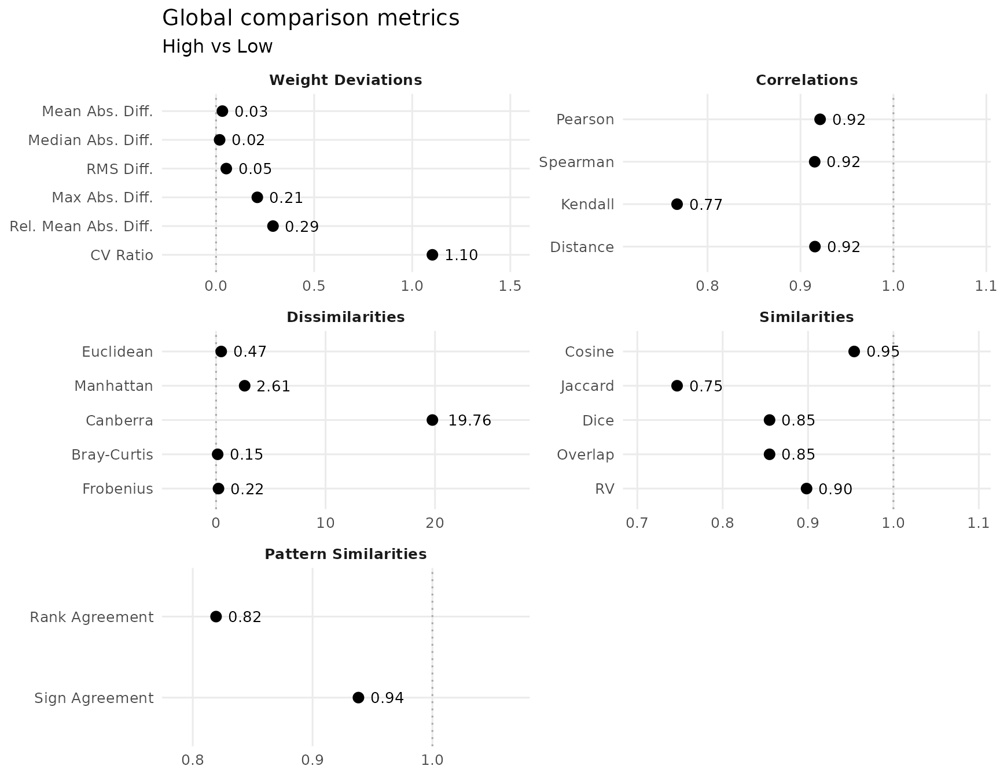
Each panel is one group of metrics, with a dotted line at the value of identical networks: 1 for correlations and similarities, 0 for deviations and dissimilarities.
network_metrics(comparison)## network metric value
## High Node Count 9
## High Edge Count 76
## High Network Density 1
## High Mean Distance 0.04
## High Mean Out-Strength 1
## High SD Out-Strength 0
## High Mean In-Strength 1
## High SD In-Strength 0.91
## High Mean Out-Degree 8.44
## High SD Out-Degree 1.13
## High Centralization (Out-Degree) 0.05
## High Centralization (In-Degree) 0.05
## High Reciprocity 0.96
## Low Node Count 9
## Low Edge Count 75
## Low Network Density 1
## Low Mean Distance 0.06
## Low Mean Out-Strength 1
## Low SD Out-Strength 0
## Low Mean In-Strength 1
## Low SD In-Strength 0.72
## Low Mean Out-Degree 8.33
## Low SD Out-Degree 0.87
## Low Centralization (Out-Degree) 0.06
## Low Centralization (In-Degree) 0.06
## Low Reciprocity 0.94network_metrics() describes each network on its own.
Both are almost complete (76 and 75 of 81 possible edges, density 1
rounded), and their in-strengths are spread more widely in High (SD
0.91) than in Low (0.72).
Edges
head(edge_differences(comparison), 8)## pair network_a network_b from to weight_a weight_b diff
## High vs Low High Low adapt adapt 0 0 0
## High vs Low High Low adapt cohesion 0.26 0.28 -0.01
## High vs Low High Low adapt consensus 0.52 0.46 0.06
## High vs Low High Low adapt coregulate 0 0.03 -0.03
## High vs Low High Low adapt discuss 0.04 0.07 -0.03
## High vs Low High Low adapt emotion 0.14 0.11 0.03
## High vs Low High Low adapt monitor 0.03 0.04 -0.01
## High vs Low High Low adapt plan 0.01 0.02 0
## abs_diff rel_diff ratio log_ratio rank_a rank_b rank_diff percentile_diff
## 0 NA NA 0 3 3.50 -0.50 -0.01
## 0.01 0.03 0.95 -0.01 70 70 0 0
## 0.06 0.06 1.12 0.04 79 81 -2 -0.02
## 0.03 1 0 -0.03 3 26 -23 -0.26
## 0.03 0.31 0.52 -0.03 35 40 -5 -0.06
## 0.03 0.12 1.27 0.03 58 54 4 0.05
## 0.01 0.11 0.80 -0.01 29 29 0 0
## 0 0.07 0.87 0 17 19 -2 -0.02
## status higher
## neither equal
## both Low
## both High
## only_b Low
## both Low
## both High
## both Low
## both Lowedge_differences() gives one row per cell: the two
weights, their difference, its absolute value, the relative difference
(|a - b| / (|a| + |b|)), the ratio, the ranks of the edge
in each network, status (present in both networks, in one,
or in neither) and higher, the network in which the edge is
larger. adapt to coregulate exists only in Low
(0 against 0.03).
plot(comparison, type = "edges")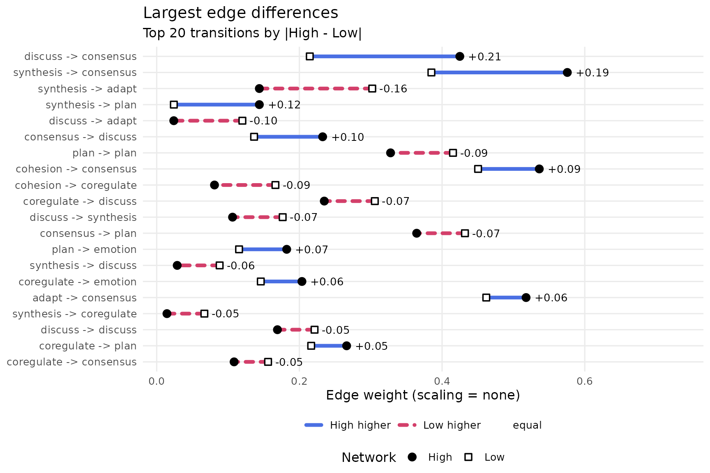
The edge view draws the 20 largest differences as a line between the
two weights, a diamond for High and a square for Low. The line is solid
blue where High is higher and dashed red where Low is higher, and is
labelled with the difference. discuss to
consensus (0.42 in High, 0.21 in Low) and
synthesis to consensus (0.58 against 0.39) are
the largest differences in favour of High, and synthesis to
adapt (0.14 against 0.30) in favour of Low.
plot(comparison, type = "networks")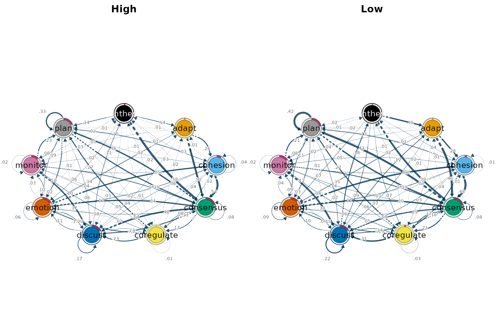
plot(comparison, type = "difference")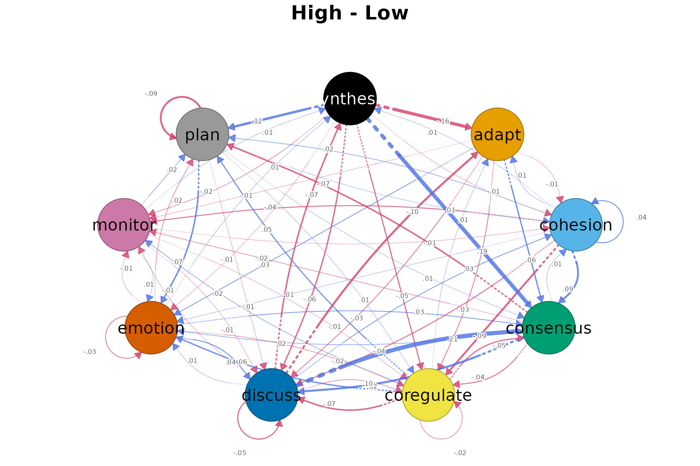
The networks view draws each network once; the difference view draws the signed difference network, blue for transitions stronger in High and red for transitions stronger in Low.
plot(comparison, type = "heatmap")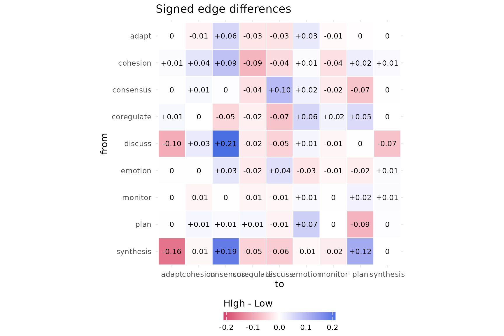
plot(comparison, type = "scatter")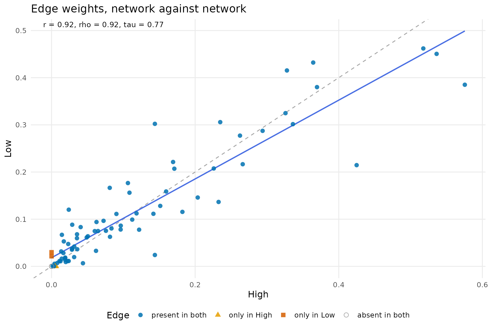
The heatmap prints every cell of the difference matrix. The scatter plot sets each transition’s weight in High against its weight in Low; points on the diagonal are equal in both.
Nodes
node_differences(comparison, measure = "InStrength")## pair network_a network_b node measure value_a value_b diff
## High vs Low High Low adapt InStrength 0.22 0.45 -0.24
## High vs Low High Low cohesion InStrength 0.81 0.80 0.02
## High vs Low High Low consensus InStrength 2.95 2.42 0.54
## High vs Low High Low coregulate InStrength 0.44 0.69 -0.25
## High vs Low High Low discuss InStrength 1.12 1.21 -0.09
## High vs Low High Low emotion InStrength 1 0.81 0.19
## High vs Low High Low monitor InStrength 0.30 0.39 -0.09
## High vs Low High Low plan InStrength 1.27 1.15 0.12
## High vs Low High Low synthesis InStrength 0.17 0.22 -0.05
## abs_diff rank_a rank_b higher
## 0.24 2 3 Low
## 0.02 5 5 High
## 0.54 9 9 High
## 0.25 4 4 Low
## 0.09 7 8 Low
## 0.19 6 6 High
## 0.09 3 2 Low
## 0.12 8 7 High
## 0.05 1 1 Lownode_differences() compares the centralities of each
state, by default in-strength, out-strength and betweenness.
consensus receives the most in both networks, more in High
(2.95 against 2.42), and adapt and coregulate
receive more in Low.
plot(comparison, type = "nodes")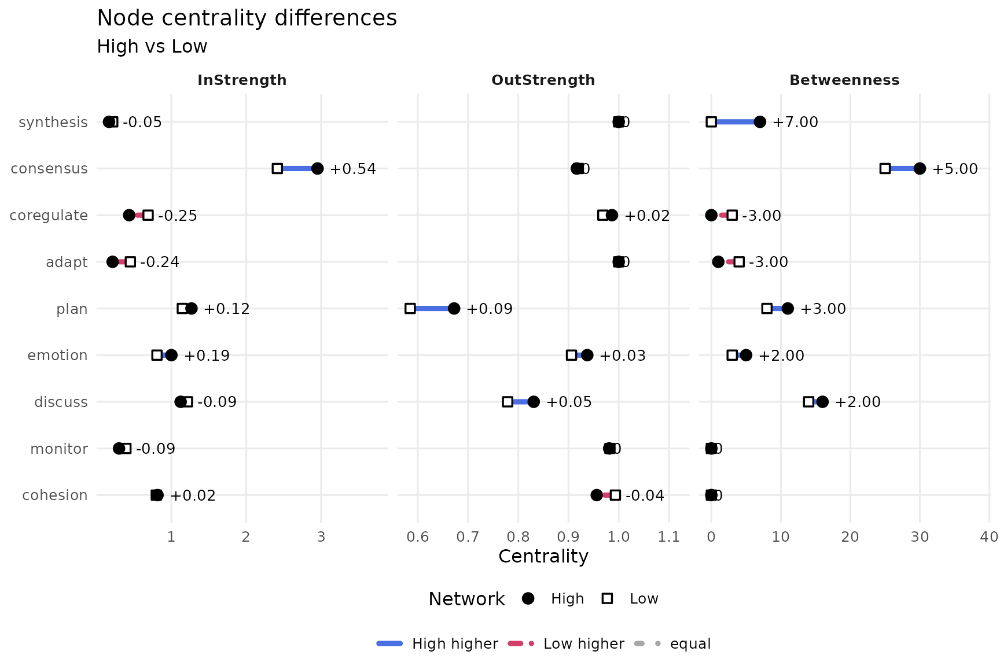
Permutation test
The descriptive tables show where the networks differ, not whether a
difference is larger than sampling would produce.
test = "permutation" reassigns the sequences to the two
groups 1,000 times, re-estimates both networks each time, and compares
the observed difference of each edge and node measure with the
reassigned ones (Saqr et al., 2025). Two global statistics test whether
the networks differ at all: M, the sum of the absolute differences over
all cells, and S, the largest.
tested <- compare_networks(achievers, test = "permutation", iter = 1000,
seed = 1)
summary(tested)## pair network_a network_b n_cells n_differing share_higher_a
## High vs Low High Low 81 78 0.51
## share_higher_b mean_abs_diff max_abs_diff pearson spearman cosine jaccard
## 0.46 0.03 0.21 0.92 0.92 0.95 0.75
## top_edge top_edge_higher n_sig_edges n_sig_nodes m_stat m_p
## discuss -> consensus High 42 16 2.61 0.001
## s_stat s_p
## 0.21 0.00142 of the 78 transitions and 16 of the 27 node measures differ at the
5% level, and both global statistics are significant (M = 2.61, S =
0.21, p = 0.001, the smallest p-value 1,000 permutations can give).
adjust corrects the edge p-values for multiple testing, for
example adjust = "BH".
plot(tested, type = "inference")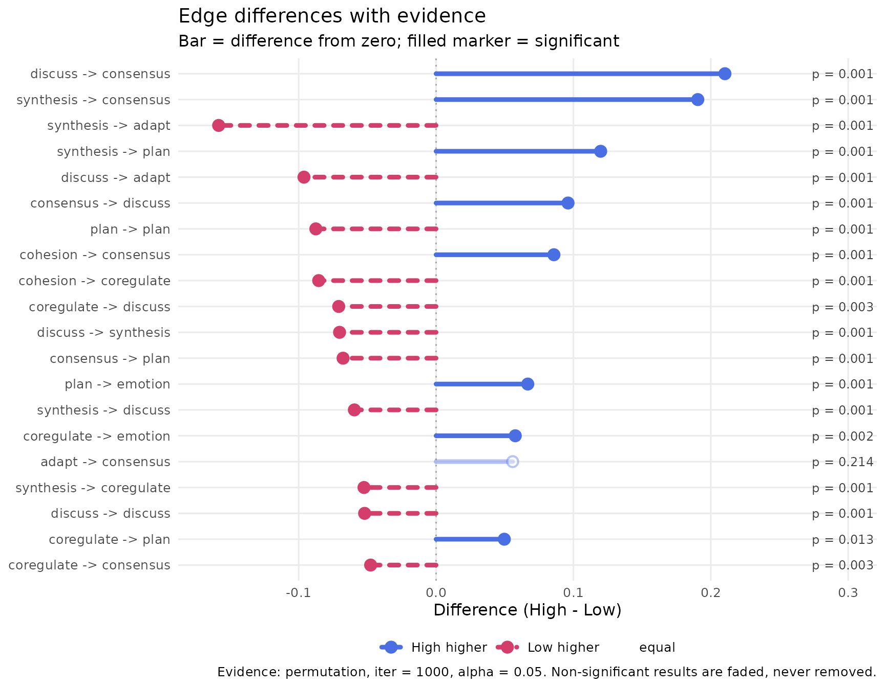
The inference view draws each edge difference as a bar from zero, with its p-value on the right; a filled marker is significant at 0.05.
Differences in centralities
measures = "all" compares nine centralities. In- and
out-strength are the sums of a state’s incoming and outgoing transition
probabilities (Opsahl, Agneessens, & Skvoretz, 2010). Closeness is
the inverse of the summed shortest-path distances to a state
(ClosenessIn), from it (ClosenessOut) or
ignoring direction (Closeness), and betweenness the number
of shortest paths that pass through it (Freeman, 1978); a heavier edge
is a shorter step. BetweennessRSP counts randomised
shortest paths, which include routes slightly longer than the shortest
(Kivimäki et al., 2016). Diffusion sums the weights of the
walks of up to n steps that start at a state (Banerjee et al., 2013),
and Clustering is the weighted clustering coefficient
(Onnela et al., 2005). The permutation test gives each a p-value.
centralities <- compare_networks(achievers, measures = "all",
test = "permutation", iter = 1000, seed = 1)
summary(centralities)## pair network_a network_b n_cells n_differing share_higher_a
## High vs Low High Low 81 78 0.51
## share_higher_b mean_abs_diff max_abs_diff pearson spearman cosine jaccard
## 0.46 0.03 0.21 0.92 0.92 0.95 0.75
## top_edge top_edge_higher n_sig_edges n_sig_nodes m_stat m_p
## discuss -> consensus High 42 55 2.61 0.001
## s_stat s_p
## 0.21 0.00155 of the 81 node measures (nine states, nine measures) differ at the 5% level: all nine closeness values, eight each for randomised-shortest-path betweenness and clustering, seven each for in-strength and in-closeness, five each for out-strength and diffusion, four for betweenness and two for out-closeness.
node_differences(centralities, measure = "Betweenness")## pair network_a network_b node measure value_a value_b diff
## High vs Low High Low adapt Betweenness 1 4 -3
## High vs Low High Low cohesion Betweenness 0 0 0
## High vs Low High Low consensus Betweenness 30 25 5
## High vs Low High Low coregulate Betweenness 0 3 -3
## High vs Low High Low discuss Betweenness 16 14 2
## High vs Low High Low emotion Betweenness 5 3 2
## High vs Low High Low monitor Betweenness 0 0 0
## High vs Low High Low plan Betweenness 11 8 3
## High vs Low High Low synthesis Betweenness 7 0 7
## abs_diff rank_a rank_b higher perm_effect perm_p perm_sig sig evidence
## 3 4 6 Low -6.14 0.001 TRUE TRUE permutation
## 0 2 2 equal 0 1.000 FALSE FALSE permutation
## 5 9 9 High 6.65 0.001 TRUE TRUE permutation
## 3 2 4.50 Low -0.93 0.289 FALSE FALSE permutation
## 2 8 8 High 1.81 0.224 FALSE FALSE permutation
## 2 5 4.50 High 13.80 0.001 TRUE TRUE permutation
## 0 2 2 equal NA 1.000 FALSE FALSE permutation
## 3 7 7 High 0.81 0.373 FALSE FALSE permutation
## 7 6 2 High 22.36 0.003 TRUE TRUE permutationconsensus lies on most shortest paths in both networks,
more in High (30 against 25, p = 0.001). synthesis lies on
7 shortest paths in High and none in Low (p = 0.003), and
emotion on 5 against 3 (p = 0.001); adapt lies
on more in Low (4 against 1, p = 0.001). coregulate,
discuss and plan differ by 2 or 3 paths
without significance.
node_differences(centralities, measure = "BetweennessRSP")## pair network_a network_b node measure value_a value_b diff
## High vs Low High Low adapt BetweennessRSP 1 1 0
## High vs Low High Low cohesion BetweennessRSP 26 13 13
## High vs Low High Low consensus BetweennessRSP 121 88 33
## High vs Low High Low coregulate BetweennessRSP 30 25 5
## High vs Low High Low discuss BetweennessRSP 63 45 18
## High vs Low High Low emotion BetweennessRSP 48 26 22
## High vs Low High Low monitor BetweennessRSP 13 9 4
## High vs Low High Low plan BetweennessRSP 69 55 14
## High vs Low High Low synthesis BetweennessRSP 7 1 6
## abs_diff rank_a rank_b higher perm_effect perm_p perm_sig sig evidence
## 0 1 1.50 equal NA 1.000 FALSE FALSE permutation
## 13 4 4 High 7.25 0.001 TRUE TRUE permutation
## 33 9 9 High 11.25 0.001 TRUE TRUE permutation
## 5 5 5 High 2.61 0.019 TRUE TRUE permutation
## 18 7 7 High 8.46 0.001 TRUE TRUE permutation
## 22 6 6 High 9.90 0.001 TRUE TRUE permutation
## 4 3 3 High 2.61 0.029 TRUE TRUE permutation
## 14 8 8 High 5.53 0.001 TRUE TRUE permutation
## 6 2 1.50 High 4.35 0.001 TRUE TRUE permutationCounting near-shortest routes as well, every state except
adapt lies on more routes in High, and all eight
differences are significant; consensus has 121 against
88.
node_differences(centralities, measure = "Closeness", digits = 3)## pair network_a network_b node measure value_a value_b diff
## High vs Low High Low adapt Closeness 0.026 0.024 0.002
## High vs Low High Low cohesion Closeness 0.028 0.025 0.003
## High vs Low High Low consensus Closeness 0.041 0.035 0.006
## High vs Low High Low coregulate Closeness 0.020 0.022 -0.001
## High vs Low High Low discuss Closeness 0.031 0.022 0.009
## High vs Low High Low emotion Closeness 0.025 0.021 0.004
## High vs Low High Low monitor Closeness 0.021 0.018 0.003
## High vs Low High Low plan Closeness 0.028 0.026 0.002
## High vs Low High Low synthesis Closeness 0.027 0.023 0.004
## abs_diff rank_a rank_b higher perm_effect perm_p perm_sig sig evidence
## 0.002 4 6 High 2.781 0.006 TRUE TRUE permutation
## 0.003 6 7 High 4.453 0.001 TRUE TRUE permutation
## 0.006 9 9 High 7.135 0.001 TRUE TRUE permutation
## 0.001 1 3 Low -2.289 0.023 TRUE TRUE permutation
## 0.009 8 4 High 11.986 0.001 TRUE TRUE permutation
## 0.004 3 2 High 6.708 0.001 TRUE TRUE permutation
## 0.003 2 1 High 5.684 0.001 TRUE TRUE permutation
## 0.002 7 8 High 3.614 0.001 TRUE TRUE permutation
## 0.004 5 5 High 4.940 0.001 TRUE TRUE permutationCloseness is higher in High for every state except
coregulate.
plot(centralities, type = "nodes",
measure = c("Betweenness", "BetweennessRSP", "Closeness", "Diffusion"))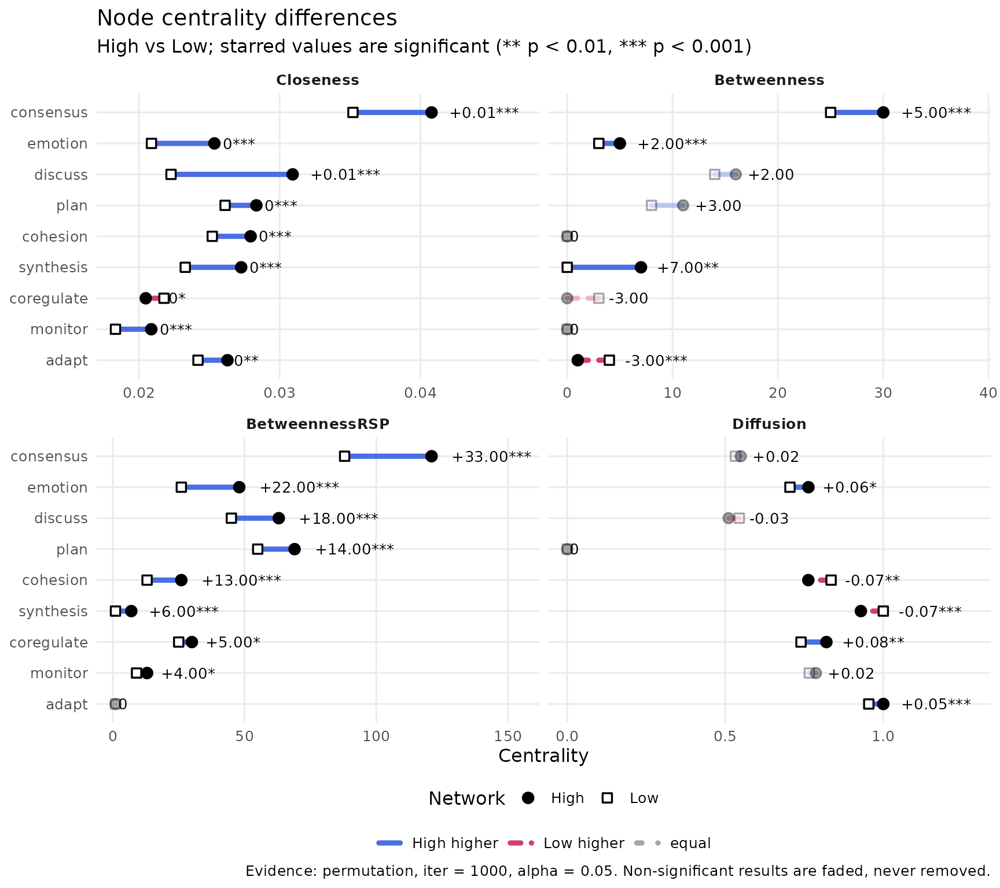
The node view draws each state’s value in both networks, a diamond for High and a square for Low, joined by a solid blue line where High is higher and a dashed red line where Low is higher; stars mark the significant differences.
Edge betweenness
Betweenness can also be computed for edges: the number of shortest
paths between states that pass through an edge (Girvan & Newman,
2002). An edge with a high value carries many of the routes through the
network. net_edge_betweenness() returns one network per
group whose weights are these counts, and permutation()
tests the difference of every edge: it reassigns the sequences between
the groups, re-estimates both transition networks and recomputes their
edge betweenness each time.
edge_betweenness <- net_edge_betweenness(achievers)
edge_betweenness## Group Networks (2 groups)
##
## Group Nodes Edges Weights
## High 9 24 [1.000, 15.000]
## Low 9 29 [1.000, 14.000]
routes <- permutation(edge_betweenness, iter = 1000, seed = 1)
routes## Grouped Permutation Test
## Groups: High vs Low
##
## -- High vs Low --
## Permutation Test: Edge-Betweenness Network [directed]
## Iterations: 1000 | Alpha: 0.05
## Nodes: 9 | Edges tested: 29 | Significant: 10## group from to weight_x weight_y diff effect_size
## 1 High vs Low adapt cohesion 2 4 -2 -44.766148
## 4 High vs Low cohesion consensus 7 3 4 14.910848
## 5 High vs Low cohesion coregulate 0 4 -4 -14.910848
## 8 High vs Low consensus discuss 15 12 3 11.959977
## 11 High vs Low coregulate discuss 4 6 -2 -5.064736
## 15 High vs Low discuss adapt 0 9 -9 -28.749445
## 16 High vs Low discuss consensus 7 4 3 3.062634
## 18 High vs Low discuss synthesis 15 8 7 22.360680
## 19 High vs Low emotion cohesion 6 4 2 13.801640
## 28 High vs Low synthesis adapt 9 3 6 10.341155
## p_value sig
## 1 0.000999001 TRUE
## 4 0.000999001 TRUE
## 5 0.000999001 TRUE
## 8 0.007992008 TRUE
## 11 0.000999001 TRUE
## 15 0.000999001 TRUE
## 16 0.015984016 TRUE
## 18 0.002997003 TRUE
## 19 0.000999001 TRUE
## 28 0.002997003 TRUEShortest paths run over 24 edges in High and 29 in Low, and 10 of the
29 edges tested differ in the number of paths they carry. In Low, 9
shortest paths pass through discuss to adapt
and none in High; in High, discuss to
synthesis carries 15 against 8 and synthesis
to adapt 9 against 3.
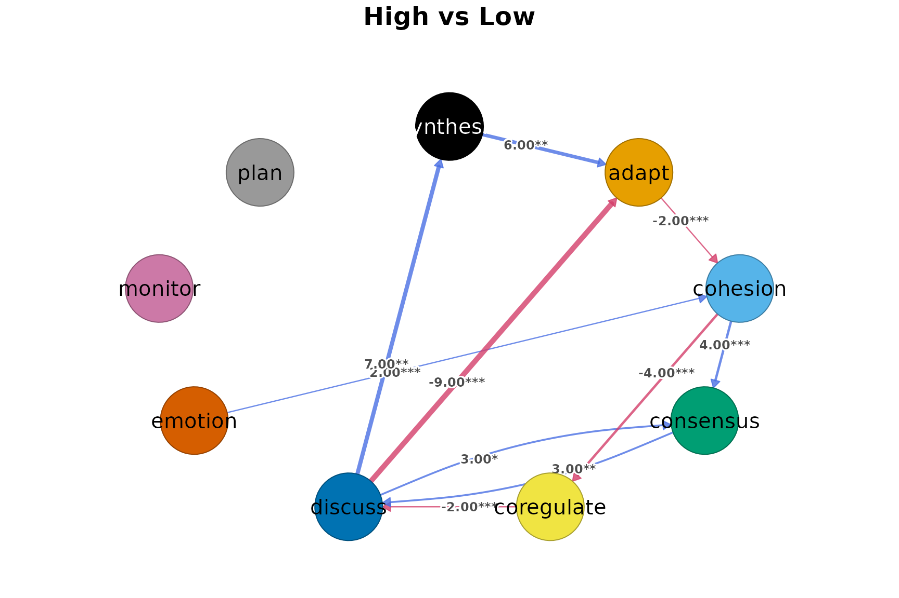
cograph draws the edges that differ, blue where High carries more paths and red where Low does.
bayes_compare() is the Bayesian route. Edge betweenness
is not a simple function of single transition probabilities, so it draws
whole transition matrices from the Dirichlet posterior of each network,
with the Jeffreys prior added to the counts, and recomputes edge
betweenness on every one of 10,000 draws. diff is the
posterior mean difference in the number of shortest paths, with its 95%
credible interval; an edge is credibly different when the interval
excludes zero.
routes_posterior <- bayes_compare(edge_betweenness, seed = 1)
routes_posterior## Grouped Bayesian Dirichlet-Multinomial Comparison
## Comparisons: High vs Low
## Use summary() for combined edge-level results.## comparison from to weight_x weight_y count_x count_y diff
## 1 High vs Low adapt cohesion 1.9321 3.3765 37 102 -1.4444
## 2 High vs Low adapt consensus 6.0050 5.9339 73 170 0.0711
## 3 High vs Low adapt coregulate 0.0000 0.0000 0 11 0.0000
## 4 High vs Low adapt discuss 0.0000 0.0166 5 25 -0.0166
## 5 High vs Low adapt emotion 0.9406 1.5377 20 41 -0.5971
## 6 High vs Low adapt monitor 0.0553 0.0341 4 13 0.0212
## 7 High vs Low adapt plan 0.0000 0.0000 2 6 0.0000
## 8 High vs Low cohesion adapt 0.0000 0.0000 5 0 0.0000
## effect_size ci_lower ci_upper ci_width p_difference p_value sig
## 1 -2.00628791 -3 0 3 0.9999 0.0002 FALSE
## 2 0.16049834 -1 1 2 0.8894 0.2212 FALSE
## 3 0.00000000 0 0 0 1.0000 0.0000 FALSE
## 4 -0.09148479 0 0 0 1.0000 0.0000 FALSE
## 5 -0.98620607 -2 1 3 0.9713 0.0574 FALSE
## 6 0.06894516 -1 1 2 0.9472 0.1056 FALSE
## 7 0.00000000 0 0 0 1.0000 0.0000 FALSE
## 8 0.00000000 0 0 0 1.0000 0.0000 FALSE2 of the 78 edges are credibly different: discuss to
consensus carries 2.9 more shortest paths in High (95%
interval 1 to 4), and coregulate to consensus
carries one path in Low and almost none in High. Betweenness counts
whole paths, so its posterior intervals run between whole numbers and
are wide. discuss to adapt, which carries 7.1
paths in Low and none in High on average, has an interval from −9 to 0:
every draw has it lower in High (p_difference = 1), but the
interval reaches zero, so it is not credibly different. The permutation
test found 10 edges, the Bayesian comparison 2; the two answer the
question in different ways, by reassigning whole sequences and by
drawing transition probabilities independently.
plot(routes_posterior)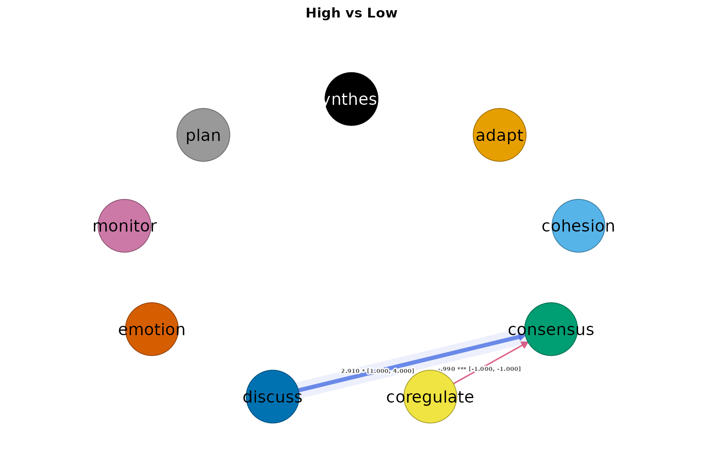
Bayesian comparison
test = "bayes" models the transitions out of each state
with a Dirichlet posterior in each network, with the Jeffreys prior of
0.5 added to every count (Jeffreys, 1946; Johnston & Jendoubi,
2026), and draws the difference of every edge from the two posteriors
(Gelman et al., 2013). It reports the posterior mean difference, its 95%
credible interval and the probability of direction, the posterior
probability that the difference has the sign of its mean (Makowski et
al., 2019). bayes_p is 2 * (1 - pd), a
two-sided p-value equivalent.
bayesian <- compare_networks(achievers, test = "bayes", iter = 1000,
seed = 1)
summary(bayesian)## pair network_a network_b n_cells n_differing share_higher_a
## High vs Low High Low 81 78 0.51
## share_higher_b mean_abs_diff max_abs_diff pearson spearman cosine jaccard
## 0.46 0.03 0.21 0.92 0.92 0.95 0.75
## top_edge top_edge_higher n_sig_edges
## discuss -> consensus High 3939 transitions have a 95% credible interval that excludes zero, against 42 significant in the permutation test; the two agree on 76 of the 81 cells. The posterior treats the transitions as independent counts, while the permutation test reassigns whole sequences.
plot(bayesian, type = "inference")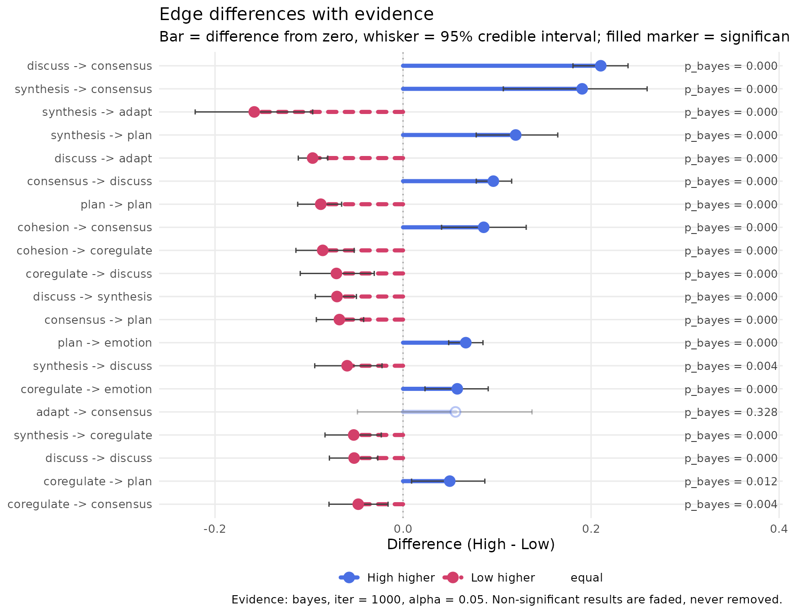
Practical equivalence
A credible interval that excludes zero says the difference is not
zero, not that it is large enough to matter. rope sets a
region of practical equivalence around zero on the difference scale
(Kruschke, 2018); here a difference of up to 0.02 in a transition
probability is treated as negligible. Each edge is classed as
different when its 95% credible interval lies entirely
outside the region, equivalent when it lies entirely
inside, and undecided otherwise.
equivalence <- compare_networks(achievers, test = "bayes", iter = 1000,
seed = 1, rope = 0.02)
subset(edge_differences(equivalence), bayes_decision == "different")## pair network_a network_b from to weight_a weight_b diff
## High vs Low High Low cohesion cohesion 0.04 0.01 0.04
## High vs Low High Low cohesion consensus 0.54 0.45 0.09
## High vs Low High Low cohesion coregulate 0.08 0.17 -0.09
## High vs Low High Low consensus discuss 0.23 0.14 0.10
## High vs Low High Low consensus plan 0.36 0.43 -0.07
## High vs Low High Low coregulate discuss 0.23 0.31 -0.07
## High vs Low High Low coregulate emotion 0.20 0.15 0.06
## High vs Low High Low discuss adapt 0.02 0.12 -0.10
## High vs Low High Low discuss consensus 0.42 0.21 0.21
## High vs Low High Low discuss discuss 0.17 0.22 -0.05
## High vs Low High Low discuss synthesis 0.11 0.18 -0.07
## High vs Low High Low emotion discuss 0.12 0.08 0.04
## High vs Low High Low plan emotion 0.18 0.12 0.07
## High vs Low High Low plan plan 0.33 0.42 -0.09
## High vs Low High Low synthesis adapt 0.14 0.30 -0.16
## High vs Low High Low synthesis consensus 0.58 0.39 0.19
## High vs Low High Low synthesis coregulate 0.01 0.07 -0.05
## High vs Low High Low synthesis discuss 0.03 0.09 -0.06
## High vs Low High Low synthesis plan 0.14 0.02 0.12
## abs_diff rel_diff ratio log_ratio rank_a rank_b rank_diff percentile_diff
## 0.04 0.74 6.62 0.04 38 11 27 0.33
## 0.09 0.09 1.19 0.06 80 80 0 0
## 0.09 0.35 0.49 -0.08 47 63 -16 -0.20
## 0.10 0.26 1.70 0.08 68 59 9 0.11
## 0.07 0.08 0.84 -0.05 76 79 -3 -0.04
## 0.07 0.13 0.77 -0.06 69 74 -5 -0.06
## 0.06 0.17 1.40 0.05 66 60 6 0.07
## 0.10 0.67 0.20 -0.09 28 57 -29 -0.36
## 0.21 0.33 1.98 0.16 78 67 11 0.14
## 0.05 0.13 0.76 -0.04 63 69 -6 -0.07
## 0.07 0.25 0.60 -0.06 53 64 -11 -0.14
## 0.04 0.22 1.57 0.04 57 44 13 0.16
## 0.07 0.22 1.58 0.06 65 56 9 0.11
## 0.09 0.12 0.79 -0.06 74 78 -4 -0.05
## 0.16 0.35 0.48 -0.13 59.50 73 -13.50 -0.16
## 0.19 0.20 1.49 0.13 81 77 4 0.05
## 0.05 0.65 0.22 -0.05 18 39 -21 -0.26
## 0.06 0.51 0.33 -0.06 30.50 49 -18.50 -0.22
## 0.12 0.71 5.98 0.11 59.50 24 35.50 0.44
## status higher bayes_diff bayes_ci_lower bayes_ci_upper bayes_pd bayes_p
## both High 0.04 0.02 0.05 1.000 0.000
## both High 0.09 0.04 0.13 1.000 0.000
## both Low -0.08 -0.11 -0.05 1.000 0.000
## both High 0.10 0.08 0.12 1.000 0.000
## both Low -0.07 -0.09 -0.04 1.000 0.000
## both Low -0.07 -0.11 -0.03 1.000 0.000
## both High 0.06 0.02 0.09 1.000 0.000
## both Low -0.10 -0.11 -0.08 1.000 0.000
## both High 0.21 0.18 0.24 1.000 0.000
## both Low -0.05 -0.08 -0.03 1.000 0.000
## both Low -0.07 -0.09 -0.05 1.000 0.000
## both High 0.04 0.02 0.07 1.000 0.000
## both High 0.07 0.05 0.09 1.000 0.000
## both Low -0.09 -0.11 -0.07 1.000 0.000
## both Low -0.16 -0.22 -0.10 1.000 0.000
## both High 0.19 0.11 0.26 1.000 0.000
## both Low -0.05 -0.08 -0.02 1.000 0.000
## both Low -0.06 -0.09 -0.02 0.998 0.004
## both High 0.12 0.08 0.16 1.000 0.000
## bayes_sig bayes_p_rope bayes_decision sig evidence
## TRUE 0.010 different TRUE bayes
## TRUE 0.002 different TRUE bayes
## TRUE 0.000 different TRUE bayes
## TRUE 0.000 different TRUE bayes
## TRUE 0.000 different TRUE bayes
## TRUE 0.006 different TRUE bayes
## TRUE 0.015 different TRUE bayes
## TRUE 0.000 different TRUE bayes
## TRUE 0.000 different TRUE bayes
## TRUE 0.005 different TRUE bayes
## TRUE 0.000 different TRUE bayes
## TRUE 0.017 different TRUE bayes
## TRUE 0.000 different TRUE bayes
## TRUE 0.000 different TRUE bayes
## TRUE 0.000 different TRUE bayes
## TRUE 0.000 different TRUE bayes
## TRUE 0.018 different TRUE bayes
## TRUE 0.018 different TRUE bayes
## TRUE 0.000 different TRUE bayes19 transitions are different, 22 practically equivalent and 40
undecided. The different ones include the largest differences of the
descriptive comparison, such as discuss to
consensus and synthesis to
adapt.
bayes_compare()
bayes_compare() runs the same model on its own, with
10,000 posterior draws by default. An edge is credibly different when
its 95% interval excludes zero, its posterior mean difference exceeds
0.01 in absolute value, and the interval bound nearest zero exceeds
0.001.
posterior <- bayes_compare(achievers, seed = 1)
head(summary(posterior), 8)## comparison from to weight_x weight_y count_x count_y
## 1 High vs Low adapt cohesion 0.257731959 0.2751677852 37 102
## 2 High vs Low adapt consensus 0.505154639 0.4577181208 73 170
## 3 High vs Low adapt coregulate 0.003436426 0.0308724832 0 11
## 4 High vs Low adapt discuss 0.037800687 0.0684563758 5 25
## 5 High vs Low adapt emotion 0.140893471 0.1114093960 20 41
## 6 High vs Low adapt monitor 0.030927835 0.0362416107 4 13
## 7 High vs Low adapt plan 0.017182131 0.0174496644 2 6
## 8 High vs Low cohesion adapt 0.005835544 0.0006565988 5 0
## diff effect_size ci_lower ci_upper ci_width p_difference
## 1 -0.0174358265 -0.40367227 -0.0996957548 0.069375472 0.16907123 0.6604
## 2 0.0474365184 0.97130014 -0.0477451105 0.141177354 0.18892246 0.8275
## 3 -0.0274360571 -2.65867974 -0.0485109892 -0.007643052 0.04086794 0.9922
## 4 -0.0306556886 -1.48677598 -0.0686210328 0.012374624 0.08099566 0.9274
## 5 0.0294840748 0.90266790 -0.0306187996 0.096729522 0.12734832 0.8170
## 6 -0.0053137757 -0.30862241 -0.0368038272 0.031956436 0.06876026 0.6535
## 7 -0.0002675338 -0.02069695 -0.0223225137 0.028841680 0.05116419 0.5454
## 8 0.0051789449 1.98117156 0.0008755307 0.011069356 0.01019383 0.9895
## p_value sig
## 1 0.6792 FALSE
## 2 0.3450 FALSE
## 3 0.0156 TRUE
## 4 0.1452 FALSE
## 5 0.3660 FALSE
## 6 0.6930 FALSE
## 7 0.9092 FALSE
## 8 0.0210 FALSEThe table gives each transition’s weight and count in both networks,
the posterior mean difference, an effect size (the difference divided by
its posterior standard deviation), the credible interval and the
probability that the difference has the sign of its mean
(p_difference). 38 transitions are credibly different.
adapt to coregulate occurs 11 times in Low and
never in High; its interval, [−0.049, −0.008], excludes zero.
plot(posterior)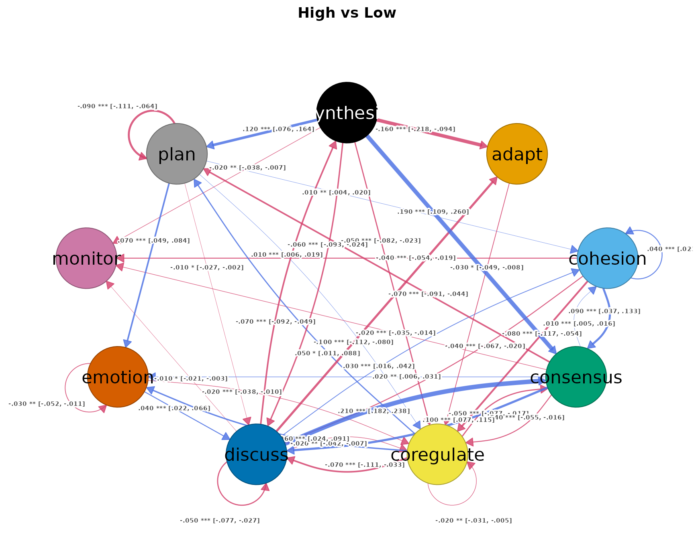
The plot draws the credibly different transitions as a difference network, blue where High is higher and red where Low is higher, each edge labelled with its posterior mean difference and credible interval.
Bootstrap of the structure
test = "bootstrap" resamples the nodes of each network
(Snijders & Borgatti, 1999; Davison & Hinkley, 1997) and
compares four structural measures: density, mean weight, centralization
and reciprocity. It reads only the weight matrices, so it also works for
matrices without data.
structural <- compare_networks(achievers, test = "bootstrap", iter = 1000,
seed = 1)
subset(global_differences(structural), category == "Structure (bootstrap)")## pair network_a network_b category metric
## High vs Low High Low Structure (bootstrap) density
## High vs Low High Low Structure (bootstrap) mean_weight
## High vs Low High Low Structure (bootstrap) centralization
## High vs Low High Low Structure (bootstrap) reciprocity
## key value boot_observed_a boot_observed_b boot_se
## boot_density 0.01 0.96 0.94 0.06
## boot_mean_weight 0 0.12 0.12 0.04
## boot_centralization 0.07 0.59 0.52 0.19
## boot_reciprocity -0.04 0.40 0.43 0.13
## boot_ci_lower boot_ci_upper boot_z boot_p boot_sig
## -0.10 0.13 0.23 0.816 FALSE
## -0.08 0.08 0.01 0.992 FALSE
## -0.30 0.44 0.40 0.693 FALSE
## -0.29 0.22 -0.28 0.783 FALSENone of the four measures differs (p between 0.69 and 0.99): the two networks have the same overall structure, and they differ in which transitions carry the weight.
Accounting for nesting
Students are nested in teams, and the achievement level is given per
team. With actor = "Group", the permutation test reassigns
whole teams instead of single students, and
global_differences() gains three Nesting
rows.
nested <- compare_networks(achievers, test = "permutation", iter = 1000,
seed = 1, actor = "Group")
subset(global_differences(nested, digits = 3),
category %in% c("Global Test (permutation)", "Nesting"))## pair network_a network_b category
## High vs Low High Low Global Test (permutation)
## High vs Low High Low Global Test (permutation)
## High vs Low High Low Nesting
## High vs Low High Low Nesting
## High vs Low High Low Nesting
## metric key value perm_p perm_sig
## M (total absolute difference) perm_M 2.612 0.001 TRUE
## S (max edge) perm_S 0.210 0.001 TRUE
## ICC icc -0.002 NA NA
## Design effect (edges) deff_edges 1.027 NA NA
## Design effect (M) deff_global 1.201 NA NAThe intraclass correlation is −0.002, and the design effect is 1.03 for the transitions and 1.20 for M. The networks still differ overall (M = 2.61, p = 0.001), and 42 transitions remain significant. The article on nested data describes these quantities.
More than two networks
mark_phases() divides each student’s actions into three
phases of equal length, and build_network() estimates one
network per phase. Every student contributes to all three phases, so
with actor = "Actor" the permutation test reassigns each
student’s sequences between phases within the student.
reference = "early" compares the other two phases with the
first instead of comparing every pair.
phased <- mark_phases(group_regulation_long, actor = "Actor", time = "Time",
n = 3, labels = c("early", "middle", "late"))
phases <- build_network(phased, method = "relative", actor = "Actor",
action = "Action", time = "Time", group = "phase")
over_time <- compare_networks(phases, reference = "early",
test = "permutation", iter = 1000, seed = 1,
actor = "Actor")
summary(over_time)## pair network_a network_b n_cells n_differing share_higher_a
## early vs middle early middle 81 78 0.54
## early vs late early late 81 77 0.49
## share_higher_b mean_abs_diff max_abs_diff pearson spearman cosine jaccard
## 0.42 0.01 0.08 0.99 0.97 0.99 0.90
## 0.46 0.01 0.07 0.99 0.98 0.99 0.90
## top_edge top_edge_higher n_sig_edges n_sig_nodes m_stat m_p
## synthesis -> consensus middle 6 1 0.98 0.712
## adapt -> cohesion late 4 2 0.94 0.720
## s_stat s_p
## 0.08 0.546
## 0.07 0.673The three phases are nearly identical: the edge weights correlate at
0.99 with those of the early phase, and the largest difference is 0.08.
Neither global test is significant (p = 0.71 and 0.72 for M). Six and
four of the 78 transitions differ at the 5% level, about the four that
78 tests at that level produce by chance; adjust = "BH"
corrects the edge p-values for the number of tests.
plot(over_time, type = "edges", pair = "late")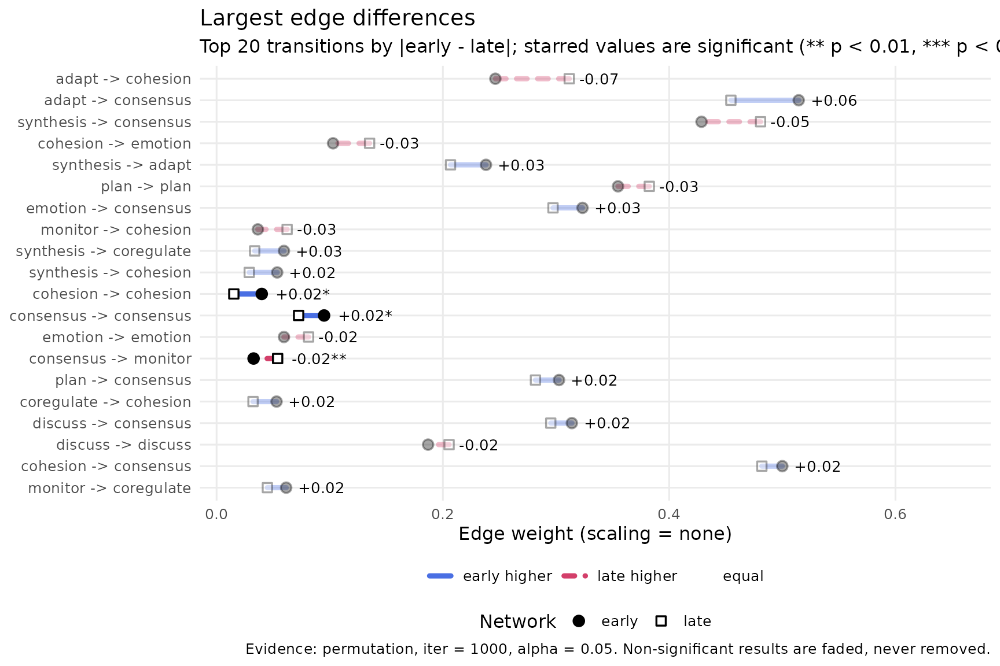
pair selects the comparisons a view or a table shows, by
the pair name, the two network names or one network name.
How to cite this article
Saqr, M., López-Pernas, S., & Misiejuk, K. (2026). Comparing networks with compare_networks(). Nestimate. https://doi.org/10.5281/zenodo.24528516 · HTML · PDF
References
Banerjee, A., Chandrasekhar, A. G., Duflo, E., & Jackson, M. O. (2013). The diffusion of microfinance. Science, 341(6144), 1236498. https://doi.org/10.1126/science.1236498
Davison, A. C., & Hinkley, D. V. (1997). Bootstrap methods and their application. Cambridge University Press. https://doi.org/10.1017/CBO9780511802843
Freeman, L. C. (1978). Centrality in social networks: Conceptual clarification. Social Networks, 1(3), 215–239. https://doi.org/10.1016/0378-8733(78)90021-7
Gelman, A., Carlin, J. B., Stern, H. S., Dunson, D. B., Vehtari, A., & Rubin, D. B. (2013). Bayesian data analysis (3rd ed.). CRC Press.
Girvan, M., & Newman, M. E. J. (2002). Community structure in social and biological networks. Proceedings of the National Academy of Sciences, 99(12), 7821–7826. https://doi.org/10.1073/pnas.122653799
Jeffreys, H. (1946). An invariant form for the prior probability in estimation problems. Proceedings of the Royal Society of London. Series A, 186(1007), 453–461. https://doi.org/10.1098/rspa.1946.0056
Johnston, L., & Jendoubi, T. (2026). How delivery mode reshapes resource engagement: A Bayesian differential network analysis. TNA Workshop 2026.
Kivimäki, I., Lebichot, B., Saramäki, J., & Saerens, M. (2016). Two betweenness centrality measures based on randomized shortest paths. Scientific Reports, 6, 19668. https://doi.org/10.1038/srep19668
Kruschke, J. K. (2018). Rejecting or accepting parameter values in Bayesian estimation. Advances in Methods and Practices in Psychological Science, 1(2), 270–280. https://doi.org/10.1177/2515245918771304
Makowski, D., Ben-Shachar, M. S., Chen, S. H. A., & Lüdecke, D. (2019). Indices of effect existence and significance in the Bayesian framework. Frontiers in Psychology, 10, 2767. https://doi.org/10.3389/fpsyg.2019.02767
Onnela, J.-P., Saramäki, J., Kertész, J., & Kaski, K. (2005). Intensity and coherence of motifs in weighted complex networks. Physical Review E, 71(6), 065103. https://doi.org/10.1103/PhysRevE.71.065103
Opsahl, T., Agneessens, F., & Skvoretz, J. (2010). Node centrality in weighted networks: Generalizing degree and shortest paths. Social Networks, 32(3), 245–251. https://doi.org/10.1016/j.socnet.2010.03.006
Robert, P., & Escoufier, Y. (1976). A unifying tool for linear multivariate statistical methods: The RV-coefficient. Journal of the Royal Statistical Society: Series C (Applied Statistics), 25(3), 257–265. https://doi.org/10.2307/2347233
Saqr, M., López-Pernas, S., & Misiejuk, K. (2026). Nestimate: An R package for dynamic, probabilistic, and high order network analysis. Applied Psychological Measurement. https://doi.org/10.1177/01466216261472019
Saqr, M., López-Pernas, S., Törmänen, T., Kaliisa, R., Misiejuk, K., & Tikka, S. (2025). Transition network analysis: A novel framework for modeling, visualizing, and identifying the temporal patterns of learners and learning processes. In Proceedings of the 15th International Learning Analytics and Knowledge Conference (LAK25) (pp. 351–361). ACM. https://doi.org/10.1145/3706468.3706513
Snijders, T. A. B., & Borgatti, S. P. (1999). Non-parametric standard errors and tests for network statistics. Connections, 22(2), 161–170.
Tikka, S., López-Pernas, S., & Saqr, M. (2025). tna: An R package for transition network analysis. Applied Psychological Measurement, 49(6), 326–328. https://doi.org/10.1177/01466216251348840